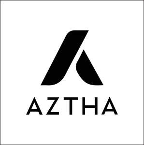

Trade Mark Journal No.2026/012 20 March 2026
UK00004349647 5 March 2026 (18,21)

- Class 18
- Handbags for ladies; Ladies handbags; Bags; Bags for clothes; Small bags for men; Toiletry bags; Luggage bags; Tote bags; Belt bags and hip bags; Make-up bags; Duffle bags; Handbags for men; Leather bags and wallets; Luggage, bags, wallets and other carriers; Leather bags; Evening bags; Makeup bags; Carry-all bags; Garment bags; Bags for climbers; Bags for campers; Carry-on bags; Knitting bags; Duffel bags; Bum bags; Athletic bags; Leather shopping bags; Cloth bags; Casual bags; Weekend bags; Toilet bags; Carrying bags; Grocery tote bags; Nose bags [feed bags]; Bags (Nose -) [feed bags]; Cosmetic bags; Knitted bags; Messenger bags; Travelling bags; Crossbody bags; Souvenir bags; Bags for sports clothing; Hand bags; Towelling bags; Cross-body bags; Sport bags; Traveling bags; Flexible bags for garments; Sling bags; Hip bags; Trunks and traveling bags; Trunks and travelling bags; Handbags, purses and wallets; Courier bags; Sports bags; Bags for sports; Mesh shopping bags; Mesh bags for shopping; Bags for carrying pets; Clutch bags; Belt bags; Textile shopping bags; Beach bags; Camping bags; Hunting bags; Shoe bags for travel; Kit bags; Drawstring bags; Shoulder bags; Waist bags; Travel bags; Bags for travel; Bags for school; School bags; Reusable shopping bags.
- Class 21
- Tumblers; Tumblers for use as drinking glasses; Tumblers [drinking vessels]; Mugs; Cups and mugs; Ceramic mugs; Porcelain mugs; Mugs of porcelain; Glass bottles; Glass cups; Glass flasks [containers]; Drinking goblets; Insulated mugs; Drinking mugs made of porcelain; Drinkware; Beverage glassware; Glass flasks; Insulated bottles [flasks]; Mugs made of plastic; Mugs of china; Vacuum mugs; China mugs; Coffee mugs; Plastic bottles; Glass containers; Bottles; Mugs made of porcelain; Glasses, drinking vessels and barware; Vacuum bottles [insulated flasks]; Sippy cups; Cheese graters; Rotary cheese graters; Graters; Cheese graters for household purposes; Graters for household use.
AZTHA LTD.